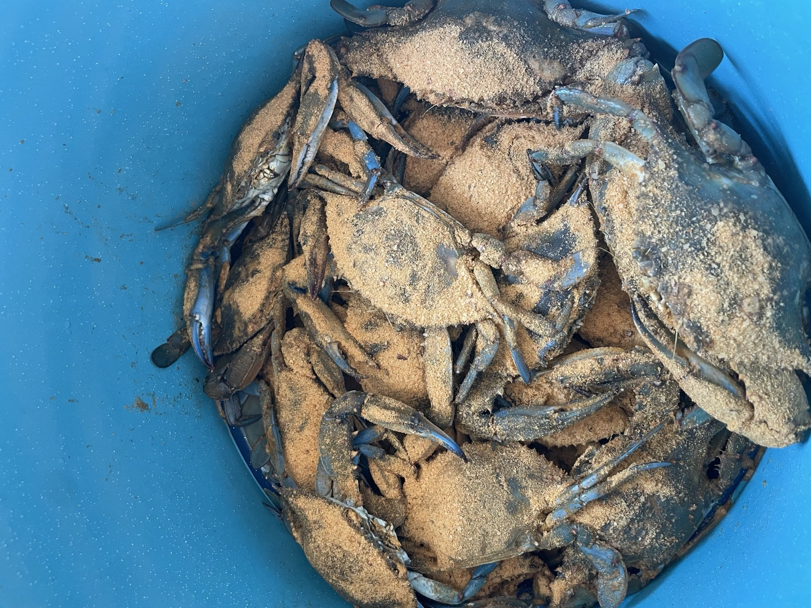

The single most useful thing to know about crabbing in Delaware is how to turn a crab over.
Not the knot, not the bait, not the tide. The belly. Flip a blue crab and there is a shape on its underside — the apron — and that shape tells you what you are holding, whether you are allowed to keep it, and whether keeping it would be a bad idea even if you are.
Everything else about a day on a Delaware dock is easy. This is the part people get wrong.
The three aprons
Turn the crab over and look at the plate folded against its abdomen.
A narrow, tapered apron — long and thin, often compared to the Washington Monument — is a male. A jimmy. Males are the crabs most people are after, and they are the ones the size limit is really about.
A triangular apron is an immature female. She has not mated yet.
A broad, rounded, dome-shaped apron — the U-shape — is a mature female. A sook.
Learn those three shapes and the rest of the rules become legible instead of arbitrary.
What Delaware asks of you
Delaware's recreational crabbing rules are not complicated, and they are worth getting right, because the regulations exist for reasons the aprons explain.
You need a recreational fishing licence. In Delaware this covers crabbing, it applies to residents and non-residents alike, and the requirement runs for adults between sixteen and sixty-five. Method does not exempt you — hand line, dip net, trotline or pot, you need the licence.
The minimum size for a hard-shell crab is five inches, measured point to point across the widest part of the shell. Soft-shell and peeler crabs have their own smaller minimums.
Mature females may be kept at any size. This surprises people who assume every crab has a minimum. The logic is that a sook has already reached maturity, so a size threshold is not doing the work it does for a growing male.
And the rule that matters most:
A female carrying eggs may not be taken. Turn her over and there is an obvious spongy mass under the apron — orange when the eggs are new, darkening toward brown or almost black as they develop. That is a sponge crab. She goes back in the water immediately, every time, no exceptions.
The daily recreational limit is one bushel per person, and Delaware's tidal waters are open to crabbing year-round.
Regulations do change. Delaware publishes the current rules through DNREC, and checking them before a trip takes about a minute. Treat the numbers here as orientation, not as a substitute for the current regulations.
Why the sponge crab rule is the whole game
It is worth understanding what you are holding when you turn over a sponge crab, because the rule stops feeling like paperwork.
That mass under her apron is a single brood, and a blue crab brood is enormous — on the order of a million eggs or more, of which a vanishing fraction will survive to become crabs. She is carrying the next population, and she is carrying it at the moment she is easiest to catch, because a female preparing to release eggs moves toward higher-salinity water down the bay, which is exactly where people are crabbing.
Putting her back is not sentimentality. It is the reason there will be crabs next August.
The practical part
The method almost does not matter. A chicken neck or a fish head on a length of line, dropped off a dock or a bulkhead into moving water, will catch crabs in Delaware's tidal creeks and bays through the summer.
What actually improves a day:
Fish the moving water. Slack tide is the dead hour. An incoming or outgoing tide pushes scent and moves crabs.
Go slowly at the end. A crab feeding on bait will hold on until it feels the water break. Raise the line steadily and get the net under it before it surfaces, not after.
Bring more bait than you think. It gets picked apart faster than anyone expects.
Carry a measure. Five inches is smaller than it looks in your hand and bigger than it looks in a basket. Guessing is how honest people end up over the line.
Handle from the back. Thumb and finger at the rear of the shell, behind the swimming legs, is the grip that keeps you out of reach of the claws.
What you are actually doing out there
Crabbing is the most democratic thing on the Delaware coast. It needs no boat, no expensive gear and no expertise beyond patience, and it happens at the same bulkheads and creek mouths where people have been doing it for as long as anyone has lived here.
It also puts you, for a few hours, in direct contact with a working estuary — the same marsh system that filters the water, buffers the storms and raises most of what gets caught in this bay. The crabs are an index of whether that system is healthy.
Which is a long way of saying: learn the aprons, throw the sponge crabs back, and the dock will still be worth standing on in twenty years.
Sources: Delaware DNREC recreational fishing and shellfishing regulations for blue crabs, including licence requirements, the five-inch hard-shell minimum, size rules for soft-shell and peeler crabs, the retention of mature females, the prohibition on taking egg-bearing females and the one-bushel daily limit; DNREC Delaware Fish Facts on blue crab. Regulations are summarised here for orientation and were current as described at the time of writing; DNREC publishes the authoritative and current rules, and readers should check them before fishing. Licence fees are deliberately not quoted because they are set administratively and change. Brood-size figures for blue crabs are given as an order of magnitude, which is how the scientific literature reports them.